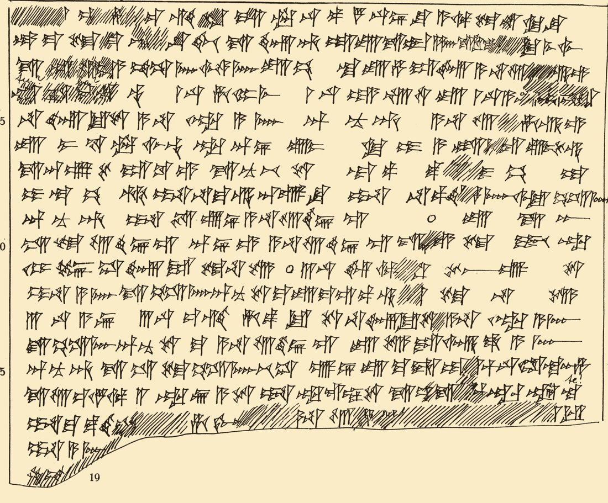
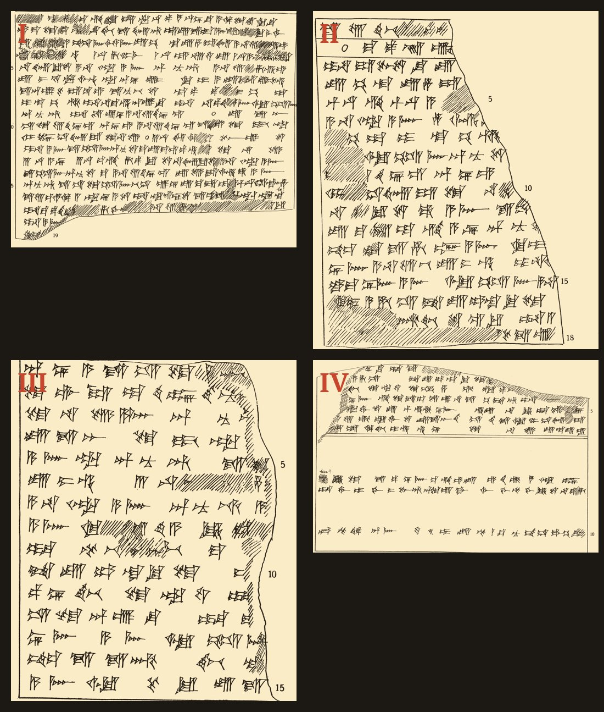
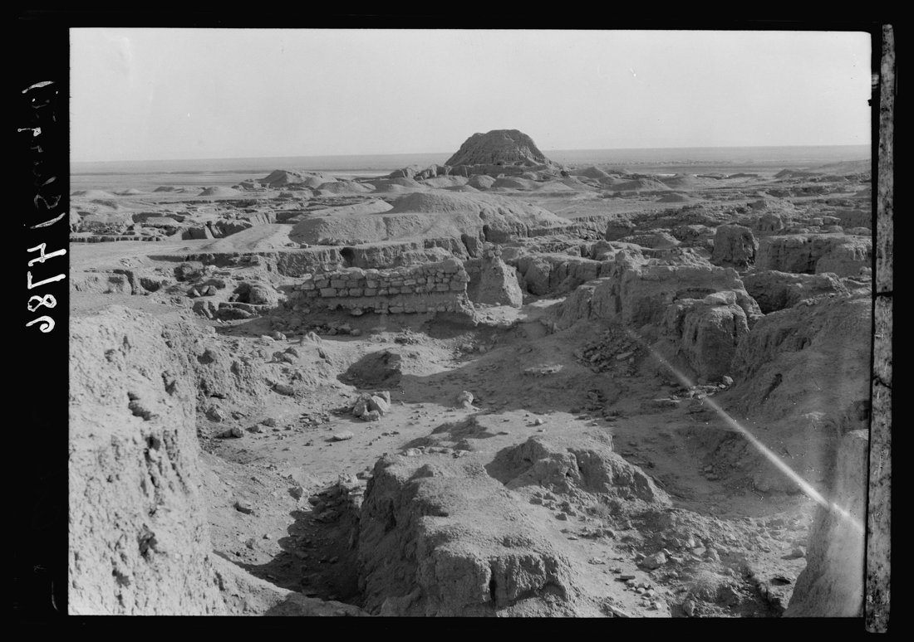
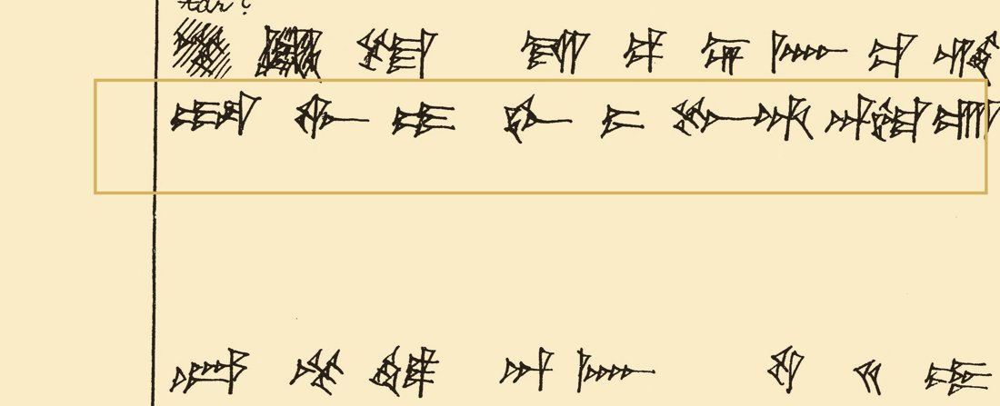
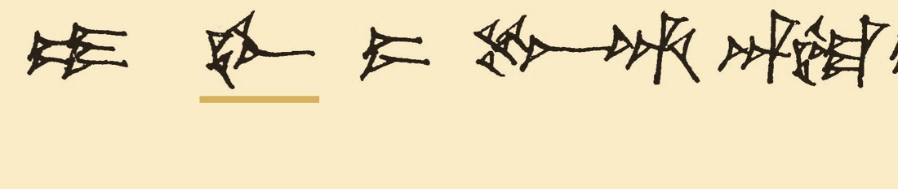
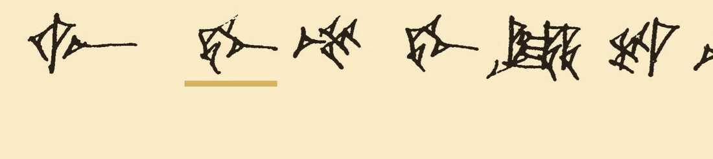
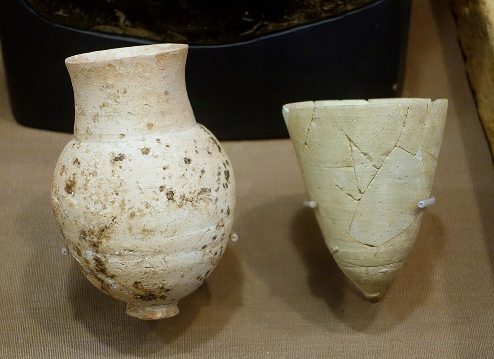
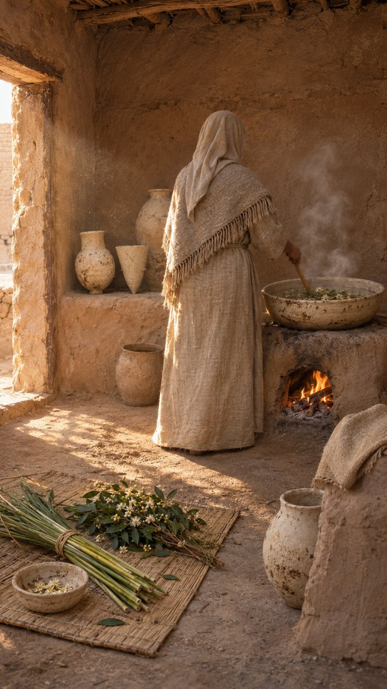

Имя на глине
Рецепт ароматного масла, записанный клинописью больше трёх тысяч лет назад, и имя женщины, по указанию которой его переписали. Подробности к видео Amadeo Perfume Wardrobe.

- ~1200лет до н. э., Ашшур, Месопотамия
- 4столбца клинописи на одной табличке
- ~20 лмасла по рецепту, «для царя»
Где мы остановились
Во второй серии мы видели, как на Кипре почти 4000 лет назад делали ароматное масло в кувшине. Но имён тех мастеров мы не знаем. В этой серии: рецепт, в котором стоит имя парфюмера.
Табличка KAR 220
Глиняную табличку нашли при раскопках Ашшура, древней столицы Ассирии на реке Тигр. Сейчас она хранится в Переднеазиатском музее в Берлине (VAT 10165). Табличка частично разбита, но на ней читаются четыре столбца текста: две стороны, по два столбца на каждой.
Это подробный рецепт: как обработать ароматный тростник и получить ароматное масло. Текст опубликовал Эрих Эбелинг в 1919-1923 годах в собрании клинописных текстов из Ашшура; его прорисовки сегодня в общественном достоянии.


Что сказано в конце
В конце таблички, под двойной чертой, стоят три строки, так называемый колофон. Строка 8 называет сам рецепт: 2 сеа (около 20 литров) хорошего масла «для головы царя». Строка 9 говорит, что рецепт переписан по указанию Таппути, парфюмера. Строка 10 даёт дату переписки.

«Переписан по указанию», а не «написала она». В тексте стоит выражение «ina pî», буквально «из уст». Его часто переводят как «со слов» или «под диктовку», но исследователи отмечают, что это не обязательно значит диктовку: скорее рецепт записан по её указанию. Сама табличка написана писцом.
Знак «женщина»
В клинописи перед именами женщин писали особый знак-определитель (MUNUS, «женщина»). Он стоит в строке 9 перед именем Таппути и ещё раз перед словом «парфюмер» (муракки́ту). Так мы точно знаем, что рецепт связан с женщиной.


Всё записано точно
Рецепт похож на рабочую инструкцию: в нём указаны количества (например, по одному ка, около литра, каждого ароматного сырья), сосуды («хару», «херсу» и другие) и время: «на закате», «на ночь», «на рассвете». Для парфюмера здесь важно не только, что смешать, но и в каком порядке.
Масло для царя и женщины-мастера
По строке 8 рецепт рассчитан на 2 сеа масла (около 20 литров), достойного царя. В Ассирии женщины-парфюмеры носили собственное звание «муракки́ту», и Таппути была не единственной: в текстах того времени упоминаются и другие мастерицы.


Что дальше
Как Таппути готовила масло для царя? В четвёртой серии сам метод: ароматная вода на ночь, ткань на рассвете и масло, которое понемногу набирает запах.
Об этом видео
Ведущий: образ Умара, основателя Amadeo Perfume Wardrobe, созданный с его согласия, с клоном его голоса. Картинки с подписью «Реконструкция» показывают, как могло быть, а не реальные находки. Прорисовки: копия Эбелинга с настоящей таблички. Кувшин из Чикаго той же эпохи, не из рецепта. Музыка и звуки: Google Flow Music.
Источники
- KAR 220, ed. J. J. de Ridder, 2021, ORACC, Archival Texts of the Middle Assyrian Period (CC BY-SA 3.0). oracc.museum.upenn.edu
- E. Ebeling, Keilschrifttexte aus Assur religiösen Inhalts, т. 2, Лейпциг, 1919-1923, № 220, с. 136-139. archive.org
- E. A. Escobar, «Tappūtī-bēlet-ekalle», в Women in the History of Science: A Sourcebook, UCL Press, 2023. PDF
- N. N. May, «Female Scholars in Mesopotamia?», в Gender and Methodology in the Ancient Near East, Barcino Monographica Orientalia 10, 2018, с. 149-162. zenodo.org
- L. Cousin, Y. Watai, «Babylonian Female Names», в Personal Names in Cuneiform Texts from Babylonia, Cambridge University Press, 2023. cambridge.org
- C. Silver, «The Queens of Chemistry in Ancient Assyria», Lady Science, 2021. ladyscience.com
- R. Angioi, «The first chemist in history may have been a female perfumer», The Conversation, 2024. theconversation.com
Изображения
- Прорисовки KAR 220: Э. Эбелинг, 1919-1923, общественное достояние; скан Internet Archive.
- Ашшур (Калат-Шергат): Matson Photograph Collection, Library of Congress, общественное достояние.
- Среднеассирийский кувшин: Oriental Institute Museum, University of Chicago; фото Daderot, CC0.
- Реконструкции: созданы для Amadeo Perfume Wardrobe.
Amadeo Perfume Wardrobe, Тбилиси · amadeoperfume.ge